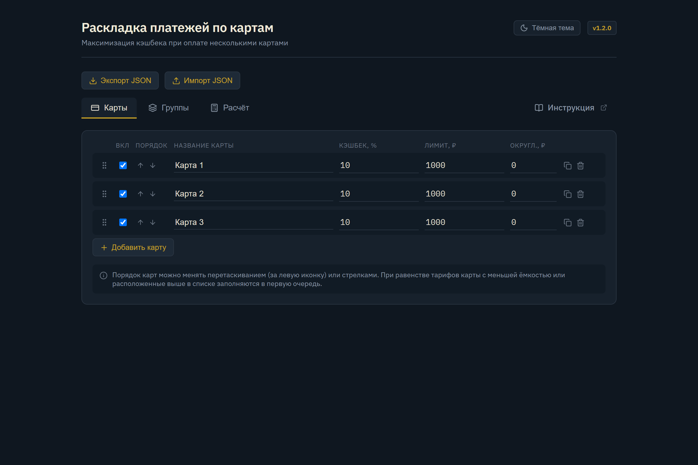
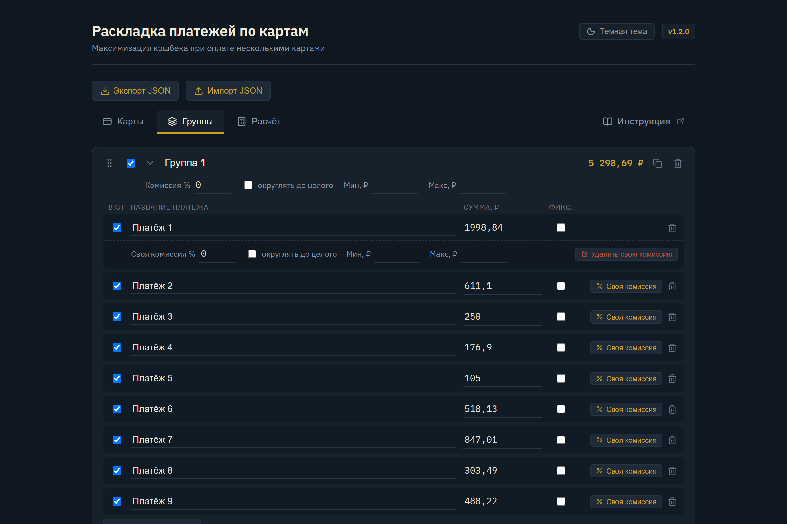
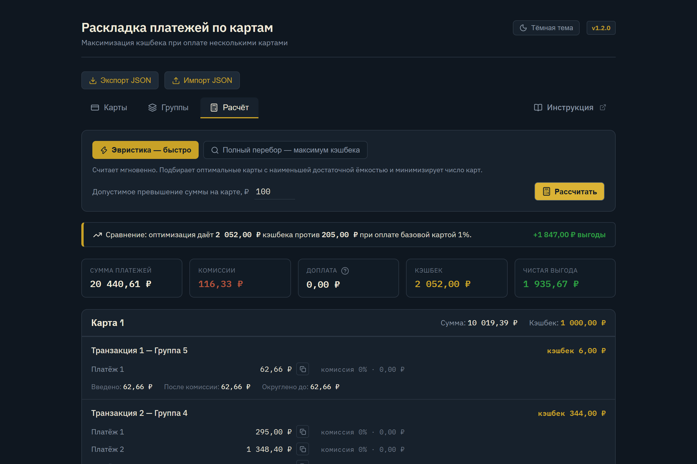

Инструкция по использованию Cashback Optimizer
Сервис для умно-жадных: умная раскладка ваших ежемесячных счетов, ЖКХ или подписок по банковским картам для получения максимального кэшбека.
1 Зачем нужна программа?
У большинства людей есть несколько банковских карт: одна даёт 10% на ЖКУ (но с лимитом до 1 000 ₽ кэшбека), вторая — 5% на всё (с лимитом до 1 500 ₽), третья — 1.5% без ограничений.
Каждый месяц нужно оплачивать 5–15 квитанций и счетов (свет, вода, капремонт, управляющая компания, интернет, мобильная связь, подписки). Если платить наугад или одной картой — теряются сотни рублей кэшбека, либо лимиты карт переполняются впустую.
2 Как устроен интерфейс
2.1. Вкладка «Карты» — ваши банковские карты
Здесь вы настраиваете список ваших действующих карт с их условиями начисления бонусов.

Любое удобное имя (например, «Альфа ЖКУ», «Т-Банк», «Озон»).
Процент начисления бонусов по карте (например, 10, 5, 1.5 или 1).
Месячный потолок кэшбека по тарифу. Если оставить 0 или пустым — карта считается безлимитной.
Шаг округления бонусов банком (обычно 1 ₽, но может быть и 10 ₽). Если не установлен (0 или пусто) — кэшбек начисляется с точностью до копеек. При заданном значении алгоритм округляет сумму списания вверх ради получения полного бонуса.
Позволяет временно отключить карту из расчёта (например, если лимит уже исчерпан в магазинах).
Перетаскивайте карточки мышкой для настройки визуального порядка приоритета карт.
2.2. Вкладка «Группы» — ваши счета и платежи
Платежи объединяются в Группы по поставщикам, лицевым счетам или способам оплаты (например, «Квартира на Ленина», «Дача», «Квартплата+»). Каждая группа, назначенная на карту, оплачивается как одна банковская транзакция.

Укажите комиссию сервиса (% комиссии, мин. и макс. порог в рублях, а также флаг округления до целого рубля).
Запрещает программе увеличивать сумму данного платежа (используйте для строгих счетов, госпошлин и услуг с точной суммой).
Если один платёж в группе имеет особые условия (например, без комиссии или повышенный тариф), задайте ему личные настройки.
Копирует группу со всеми платежами в один клик (удобно для создания шаблонов на новый месяц).
2.3. Вкладка «Расчёт» — итоги, транзакции и аналитика
Главный экран работы. Нажмите «Рассчитать», и программа построит готовый план оплаты по каждой карте с точными суммами.

Эвристика считает мгновенно и бережно сохраняет группы. Полный перебор находит абсолютный математический максимум в фоне.
Карточки показывают: исходную сумму, удержанные комиссии, доплату, начисленный кэшбек и Чистую выгоду.
Сравнивает вашу умную раскладку со стандартной картой 1% и показывает, сколько чистых рублей вы сэкономили сверху.
Нажимайте кнопку рядом с суммой платежа, чтобы скопировать её в буфер и быстро вставить в банковское приложение.
2.4. Что такое «Доплата» и зачем она нужна?
При расчёте вы увидите карточку «Доплата» со знаком вопроса. Кликните по иконке, чтобы открыть встроенную справку.
Многие банки начисляют кэшбек только за полный шаг суммы (например, 1% шагами по 100 ₽ — то есть ровно по 1 ₽ бонуса за каждые полные 100 ₽ списания, а остаток сгорает).
Представьте, что ваш счёт за ЖКУ составляет 1 950 ₽ каждый месяц:
-
Если платить строго по 1 950 ₽:
в 1-й месяц банк начислит кэшбек только на 1 900 ₽ (19 ₽, а 50 ₽ сгорят). Во 2-й месяц — снова 19 ₽ (50 ₽ сгорят).
Итого за 2 месяца: 38 ₽ кэшбека. -
Если применить доплату и заплатить в 1-й месяц 2 000 ₽ (+50 ₽):
в 1-й месяц вы платите 2 000 ₽ и получаете 20 ₽ кэшбека. Переплата 50 ₽ не теряется, а остаётся авансом на вашем лицевом счёте ЖКУ. Во 2-й месяц к оплате останется на 50 ₽ меньше — ровно 1 900 ₽, с которых банк начислит ещё 19 ₽.
Итого за 2 месяца: 39 ₽ кэшбека (вместо 38 ₽).
💰 Результат: вы потратили ровно те же 3 900 ₽ за 2 месяца, но получили на 1 ₽ чистой выгоды больше просто за счёт правильного шага оплаты!
3 Примеры использования
Ниже разобраны типовые жизненные ситуации: от базовой оплаты счетов до сложных комбинаций с комиссиями и лимитами.
Ситуация: У вас есть карта с 10% кэшбеком, но её лимит ограничен 1 000 ₽ (максимум покупок 10 000 ₽). Вторая карта даёт 5% (лимит 1 500 ₽). Сумма ваших счетов за месяц — 18 000 ₽.
Ручной расчёт (как делают обычно)
Оплатить всё картой 10%: начислится только потолок 1 000 ₽, а с 8 000 ₽ кэшбек сгорит.
Решение Cashback Optimizer
Программа отправит ровно 10 000 ₽ на карту 10% (забрав макс. 1 000 ₽), а оставшиеся 8 000 ₽ перенаправит на карту 5% (получив 400 ₽).
Ситуация: У вас карта 10% с лимитом 500 ₽ (макс. 5 000 ₽ трат) и карта 1.5% без лимита. Сумма счетов составляет 45 000 ₽.
Настройка
У карты 1.5% оставьте поле «Лимит» пустым или укажите 0.
Распределение
5 000 ₽ уйдёт на карту 10% (500 ₽ кэшбека), а весь остаток 40 000 ₽ уйдёт на безлимитную карту 1.5% (600 ₽ кэшбека).
Ситуация: Вы оплачиваете пакет квитанций в сервисе «Квартплата+» одним общим платежом (в рамках одной банковской транзакции). Базовая комиссия сервиса составляет 1% на большинство услуг, однако для отдельных поставщиков установлена повышенная комиссия 2%.
Как настроить
- В заголовке группы «Квартплата+» укажите базовую комиссию 1%.
- В строках услуг с повышенной комиссией нажмите кнопку «% Своя комиссия».
- В появившейся строке переопределения укажите 2%.
Что делает программа
Система объединит все платежи в одну транзакцию, но комиссию для каждого отдельного платежа рассчитает строго по его индивидуальной ставке, точно определив сумму списания и чистую выгоду.
Ситуация: В группе «ЕИРЦ» вы оплачиваете множество услуг (отопление, холодная вода, капремонт, вывоз мусора, электроэнергия, домофон, антенна, радио) одним платежом. Сумма к списанию составляет 3 730 ₽. Банк начисляет 5% кэшбека с шагом 100 ₽ (кратность 20 ₽ кэшбека на каждые 400 ₽ суммы).
Без округления 130 ₽ «хвоста» сгорают без бонуса (начислится только 180 ₽ кэшбека). Вы готовы доплатить 70 ₽ авансом, чтобы сумма составила 3 800 ₽ и принесла дополнительные 20 ₽ кэшбека. При этом вы хотите, чтобы аванс 70 ₽ упал на счёт отопления или воды, а фиксированные услуги (антенна, домофон, радио) остались строго неизменными.
Как настроить
- В строках «Антенна», «Домофон», «Радио» установите флаг «Фикс.».
- В строках «Отопление», «Вода», «Электроэнергия» оставьте флаг выключенным.
Что делает программа
Алгоритм выберет наибольший разрешённый коммунальный платёж (отопление) и добавит к нему доплату 70 ₽. Фиксированные строки останутся копейка в копейку. Итоговый кэшбек составит 200 ₽.
Ситуация: У вас есть две карты с одинаковой ставкой кэшбека 5%:
- Карта 1: остаток лимита 225 ₽ кэшбека (ёмкость 4 500 ₽ трат, так как лимит почти израсходован).
- Карта 2: лимит 1 000 ₽ кэшбека (ёмкость 20 000 ₽ трат).
Сумма счетов к оплате после предложенных программой доплат, комиссий и округлений составляет 18 000 ₽.
Нерациональное дробление
Попытаться задействовать Карту 1 на 4 500 ₽, а остаток 13 500 ₽ перенести на Карту 2. Это вынуждает совершать две отдельные оплаты и дробить группу счетов.
Решение Cashback Optimizer
Программа стремится минимизировать число используемых карт и не дробить платежи. Вся сумма 18 000 ₽ целиком уйдёт на Карту 2, которая полностью покроет платежи за одну операцию и принесёт 900 ₽ кэшбека.
4 Полезные советы и лайфхаки
Вы можете установить Cashback Optimizer на экран смартфона или рабочий стол ПК через меню браузера («Установить приложение»). Программа работает даже без интернета!
Используйте кнопку «Экспорт» в верхней панели, чтобы скачать файл с вашими картами и счетами. Его можно легко перенести на другое устройство через «Импорт».
После расчёта нажмите «Выгрузить результат», чтобы сохранить детальный JSON-отчёт со всеми транзакциями и суммами списаний.
Держите вкладку «Расчёт» открытой на телефоне или компьютере: кликайте на иконку копирования рядом с суммой и сразу вставляйте её в форму оплаты банка.